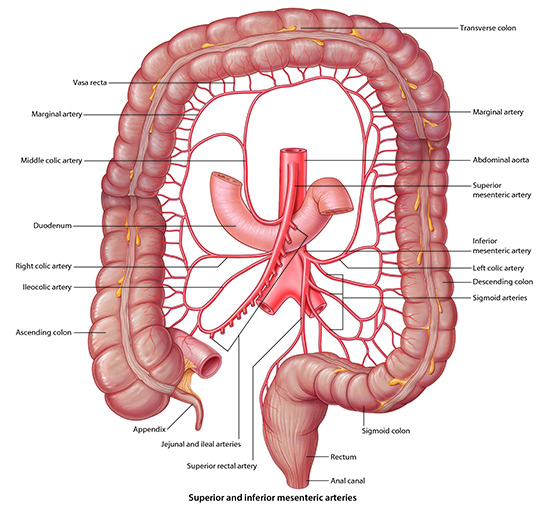

Small and Large Intestine - Page 2 of 7
|  |
| Click on image to enlarge |
| Using the Highlight tool, identify the fat pad in the sagital section of the MPR window .
Need a hint? Tap here: Fat Pad |
Can you think of a situation where the fat pad might disappear? |
|
|
In severe malnutriton (especially anorexia nervosa), the superior mesenteric artery can compress the duodenum, while the patient is in the supine position. This would cause the patient to become nauseated and throw-up. This is called a superior mesenterric artery syndrome. |
|
Putting the patient in what position might rectify this problem and why would this work? |
|
|
Place the patient in the prone position, which causes the superior mesenteric artery to fall away from the duodenum. |
|
| Add the inferior pancreaticoduoenal artery. |
Note the relationship of this artery and the superior mesenteric artery to the head of the pancreas. This part of the pancreas is know as the uncinate process.